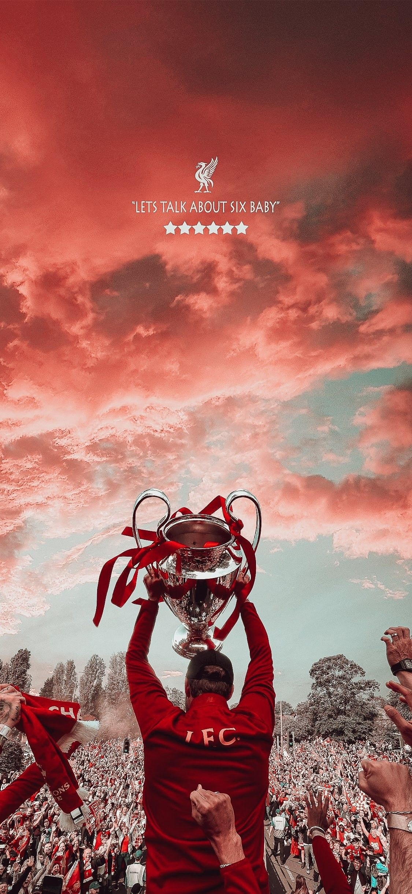

|  |
英格兰足球顶级联赛冠军：19次 |
- 1900-01, 1905-06, 1921-22, 1922-23, 1946-47, 1963-64, 1965-66, 1972-73, 1975-76, 1976-77, 1978-79, 1979-80, 1981-82, 1982-83, 1983-84, 1985-86, 1987-88, 1989-90, 1991-92
|
| 欧洲冠军联赛（包括欧洲冠军俱乐部杯）：6次 |
- 1977, 1978, 1981, 1984, 2005, 2019
|
| 欧洲联盟杯/欧洲联赛：3次 |
- 1973, 1976, 2001（欧洲联盟杯现更名为欧洲联赛）
|
| 欧洲超级杯：4次 |
- 1977, 1978, 2005, 2019（在欧洲冠军联赛和欧洲优胜者杯冠军之间进行的赛事）
|
| 英格兰足总杯：7次（俗称FA Cup） |
- 1965, 1974, 1986, 1989, 1992, 2001, 2012
|
| 英格兰联赛杯：8次（俗称联赛杯或Carling Cup/EFL Cup） |
- 1981, 1982, 1983, 1984, 1995, 2010, 2012, 2022
|
| 英格兰社区盾杯（慈善盾/超级杯，英超联赛冠军与足总杯冠军之间的赛事）：16次 |
- 1964, 1966（共享）, 1974, 1976, 1977, 1979, 1980, 1982, 1983, 1984, 1986, 1988, 1989, 1990, 2001, 2020
|